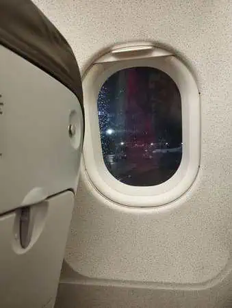
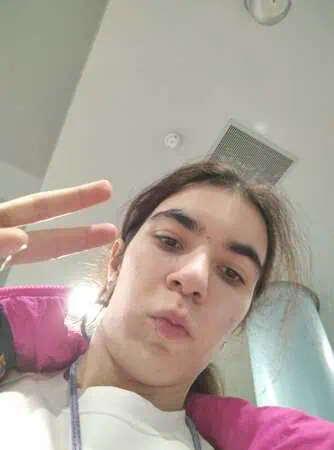
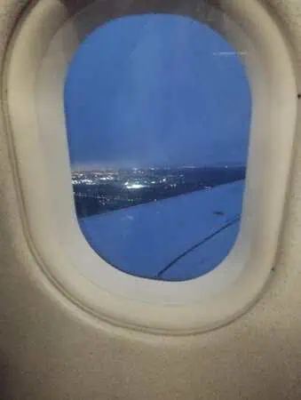
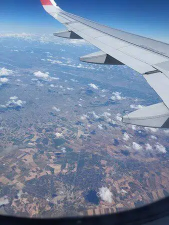
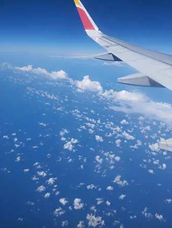
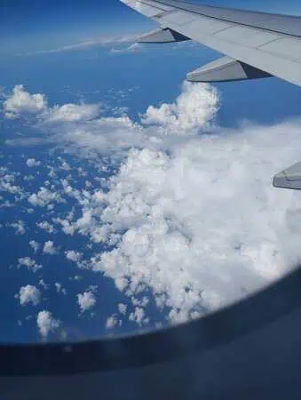
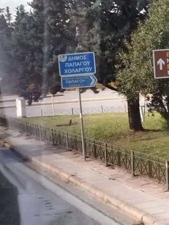
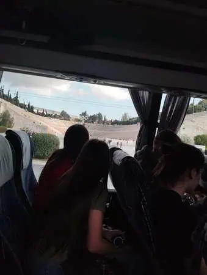

<!DOCTYPE html>
<html lang="es"></html>


<head>


<title>Dia 1</title>
<meta name="keywords" content="Atenas, Viajes, Grecia">
 <meta name="author" content="Antía" >
 <meta name="description" content="Pagina sobre el viaje a Grecia">
 <meta charset="utf-8">
 <link rel="icon" href="img/favicon-32x32.png" type="image/png">
 <link rel="stylesheet" href="estilosdias.css">
</head>
<body>
    <nav> 
        <ul>
            <li><a href="index.html">Portada</a> </li>
            <li><a href="Dia1.html">Día 1</a> </li>
            <li><a href="Dia2.html">Día 2</a> </li>
            <li><a href="Dia3.html">Día 3</a> </li>
            <li><a href="Dia4.html">Día 4</a> </li>
            <li><a href="Dia5.html">Día 5</a> </li>
            <li><a href="Dia6.html">Día 6</a> </li>
            <li><a href="Dia7y8.html">Días 7 y 8</a> </li>
        </ul>
    </nav>

    <h1>dia 1</h1>
    <article>
        
        <div class="foto_izquierda">
            
            
            
            <p>Esta aventura comienza el sábado 5 de abril a las 5 de la mañana, 
                hora a la que llegamos al aeropuerto de Vigo para hacer el proceso 
                de facturación y tomar el vuelo con destino Madrid. 
                El vuelo salió a las 8 de la mañana y llegó a Madrid 45 minutos después. </p>
    
        </div>
      
      
    </article>
    <article>
       <div class="foto_derecha" >
       
        <p>Una vez en Madrid nos dejaron tiempo libre para comer en el aeropuerto hasta que saliera el vuelo 
            ,una vez en el avión cuando estábamos apunto de despegar nos dan la noticia de que uno de los motores no 
            funcionaba y volvimos al mismo sitio donde estábamos. Tuvimos que esperar alrededor de una hora 
            para que solucionaran
             el problema pero luego finalmente despegamos,
             fueron unas 3-4 horas hasta llegar a Atenas a las 17:30(hora local) donde ,tras recoger
              nuestras maletas ,nos esperaba nuestra guía Irini.</p>
        
        
        
            </div>
    </article>
    <article>
    <div class="foto_izquierda">
         
        
        <p>Ella nos contaría en el trayecto en bus un poco sobre la historia de Atenas, la verdad los de mi curso no estaban 
            prestando demasiada atención debido al cansancio(no me incluyo), el trayecto fue un poco más largo para ver un
             poco Atenas. <br>
             Llegamos al hotel 45 minutos después más o menos hicimos el check in y fuimos a nuestras 
             respectivas habitaciones para deshacer las maletas y acostumbrarnos al hotel.
        </p>
    </div>   
    </article>
    <article>
        <p>Una hora más tarde era la hora de cenar y al terminar nos fuimos a acostar porque estábamos agotados
            (al menos yo me fui a dormir,los otros no se)
</p>
    </article>
</body>
